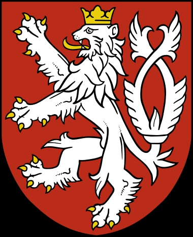

Hertig av Böhmen. Blev ca 44 år.
omkring 877 Prag, Tjekien. [1]
921 Prag, Tjekien. [1]
Vratislaus I av Böhmen, född omkring 888, död 13 februari 921, var hertig av Böhmen, född 915, död 921, yngre bror till Spytihnev I och son till Bořivoj I.
Med sin hustru Drahomira hade Vratislaus två söner, Wenceslaus och Boleslaus (även kallad Boleslaw I). Střezislava, hustru till den betydande böhmiska adelsmannen Slavnik (grundare av Slavniks dynasti), antas också av vissa historiker vara en dotter till Vratislaus.
Fuldas krönika berättar att bayrarna år 900 anföll Mähren i allians med böhmarna. Vratislaus dog (möjligen 919, även om 921 oftare antas) i strid mot magyarerna.